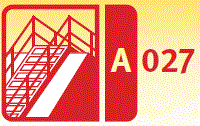
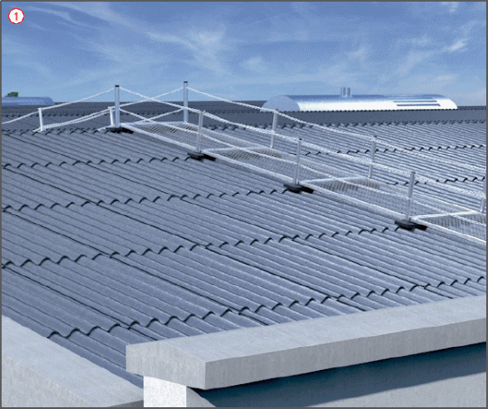
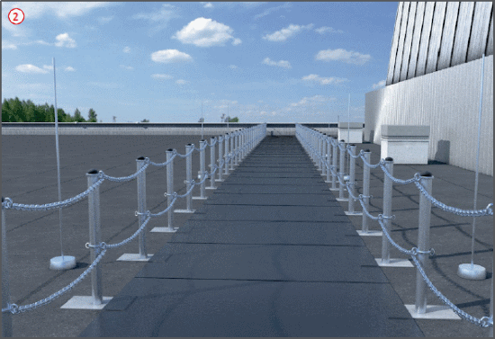
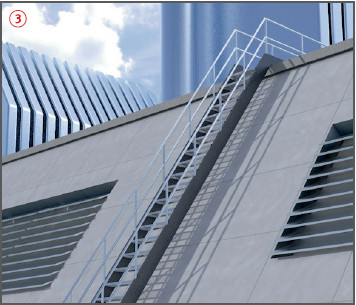

Verkehrswege auf Dächern
|
 |

Gefährdungen
- Unzureichend eingerichtete Verkehrswege können Stolpern, Rutschen, Stürzen und Abstürze zur Folge haben.
Allgemeines
- Verkehrswege so einrichten, dass die Gefährdung durch Absturz von Beschäftigten so weit als möglich vermieden wird.
- Verkehrswege so herrichten, dass sich die Beschäftigten bei jeder Witterung sicher bewegen können.
- Sind Anlagen, Einrichtungen und andere Arbeitsplätze nur über nicht durchsturzsichere Dachflächen zu erreichen, Laufstege mit beidseitigem Seitenschutz verwenden
 .
.
Schutzmaßnahmen
- Verkehrswege müssen
- durch geeignete Maßnahmen absturz - und durchsturzsicher ausgeführt werden,
- für die jeweilige Nutzung möglichst eben und ohne Stolperstellen sein,
- durch geeignete Oberflächenbeschaffenheit rutschsicher gestaltet werden (z. B. rutschhemmende Matten
 ),
),
- beleuchtet sein, wenn das Tageslicht nicht ausreicht,
- freigehalten werden.
Anforderungen an Laufstege
- Mindestbreite: 0,50 m,
- bei einer Neigung über 1:5 (ca. 11°): Trittleisten aufbringen,
- bei einer Neigung über 1:1,75 (ca. 30°): Trittstufen aufbringen.

Anforderungen an Aufstiege
- Als Aufstiege Treppen verwenden
 ,
,
- Bei gelegentlichem Zugang (z.B. zu Wartungsarbeiten) einer geringen Anzahl unterwiesener Beschäftigter, können Steigleitern oder Steigeisengänge genutzt werden,
- Anlegeleitern nur bis max. 5,00 m Aufstiegshöhe einsetzen, wenn auf Grund der Gefährdungsbeurteilung keine sichereren Arbeitsmittel als Verkehrsweg verwendet werden können.

07/2021